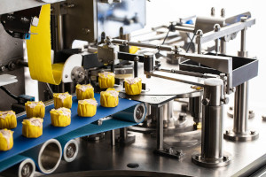

Submit on Mooshak Weekly Problems #03
This problem is a Mooshak version of a CSES problem.

A factory has \(n\) machines which can be used to make products. Your goal is to make a total of \(t\) products.For each machine, you know the number of seconds it needs to make a single product. The machines can work simultaneously, and you can freely decide their schedule.
What is the shortest time needed to make \(t\) products?
The first input line has two integers \(n\) and \(t\): the number of machines and products.
The next line has nn integers \(k_1, k_2, \ldots, k_n\): the time needed to make a product using each machine.
Print a line one integer: the minimum time needed to make \(t\) products.
| Example Input | Example Output |
|---|---|
3 7 3 2 5 | 8 |
Explanation: Machine 1 makes two products, machine 2 makes four products and machine 3 makes one product.
Content by Pedro Ribeiro (DCC/FCUP), migrated from www.dcc.fc.up.pt/~pribeiro/aulas/pc2627/problems/pc012.html to demonstrate the UC Design Kit.